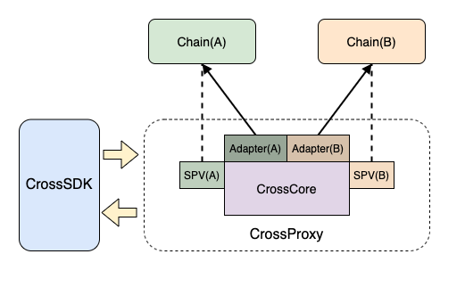
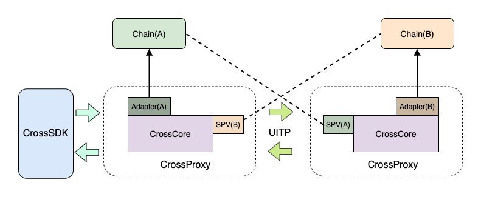

9. 跨链使用¶
9.1. 概述¶
根据长安链的跨链设计，完成一次跨链操作需要跨链代理（网关）、SPV、事务合约等几部分组成。目前版本的跨链代理中已经集成了SPV功能，因此SPV节点不需要再单独部署。跨链使用强依赖于ChainMaker本身，因此请在阅读该跨链使用前先对ChainMaker进行一定程度上的熟悉，否则可能会存在无法部署成功或使用的情况。
温馨提示：长安链将在v1.2.0起将支持跨链服务
9.2. 跨链部署¶
跨链的部署核心是进行合约的安装和跨链网关的部署，其步骤主要包括如下步骤：
业务合约/事务合约安装；
下载源码并编译跨链代理程序；
修改主配置文件
cross_chain.yml；修改其他配置文件，包括SDK、SPV配置等；
启动跨链代理；
调用跨链SDK进行验证；
9.2.1. 安装业务合约¶
一个具体的跨链业务通常需要跨两条链，每条链都需要部署具体的业务合约以便于跨链服务进行调用。业务合约即普通的合约，是用户进行具体跨链操作的合约。例如在转账跨链操作中，该合约即转账合约，由用户自主编写。
需要注意的是，业务合约需要提供正逆向操作的接口，正向接口即业务完成需要调用的合约入口，逆向接口即当正向接口操作失败进行业务回滚时调用的合约入口。
业务合约的安装属于普通合约安装，此处不再赘述。
9.2.2. 安装事务合约¶
事务合约是调用具体业务合约的入口，该合约是所有业务合约进行跨链操作的入口，该合约的主要作用有以下几点：
完成对具体业务合约的调用；
记录事务的状态，保证事务操作的唯一性，防止重复操作；
对于每个需要跨链的具体业务链而言，该合约必须进行安装，且在正常情况下每条链只需要安装一次。目前该合约基于ChainMaker的版本已经编写好，具体业务链维护人员在业务链部署完成后，便可直接部署该合约，该合约的信息如下：
路径：{项目路径}/contract/transaction_contract/transaction.wasm
信息：该合约采用go语言，合约执行环境选择：RuntimeType_GASM RuntimeType = 4
合约名称：推荐使用
TransactionStable
该合约虽然是事务调度合约，但本质仍是普通合约，其安装流程此处不再赘述。
9.2.3. 部署方式选择¶
跨链代理支持两种部署方式，一种是一对多模型，即直接访问多条链实现跨链操作，如下图所示：

在该模型中，只需要部署一个跨链代理即可完成链A与B的跨链操作，在该部署模式下，跨链代理需要同时可以访问两条链（A与B，通过Adapter配置）并可以对两条链的交易执行结果进行验证（SPV对应的A与B）。
该部署模型非常简单，只需要部署一个跨链代理即可，但要求该跨链代理可同时访问两条链。
另外一种则是一对一模型，即每个跨链代理只访问一条业务链，其中一个跨链代理可以称之为 主跨链代理 ，该跨链代理用于接收业务客户端发来的跨链消息，这里需要说明的是，每个跨链代理都可以是主跨链代理，仅仅是是否接收业务客户端发送的跨链消息的区别。不同的跨链代理之间通过UITP协议进行通信，每个跨链代理将访问独立的链，并且可以对另外的链交易结果进行验证，部署方式如下所示：

该部署方式用于网络环境较为复杂的环境，采用该方案会部署多个跨链代理，要求每个跨链代理可访问自己处理的业务链，并同时可通过spv模块获取到另外链的信息。
业务系统在进行跨链时，可根据实际的网络情况选择部署方式，从性能和稳定性角度讲，推荐使用一对多（第一种）的部署方式，具体部署时如何配置将会在后续章节进行描述。
9.2.4. 程序编译¶
下载跨链代理服务源码：
git --recursive clone https://git.code.tencent.com/ChainMaker/chainmaker-cross-chain.git
进入项目主路径，运行install.sh脚本：
cd chainmaker-cross-chain
./install.sh
脚本执行成功后会在主路径下产生一个release路径，进入该目录，其结构如下所示：
cd release
tree
├── bin
│ ├── shutdown.sh
│ └── start.sh
├── config
│ ├── chainmaker
│ │ ├── chainmaker_chain1_sdk.yml
│ │ ├── chainmaker_chain1_spv.yml
│ │ ├── chainmaker_chain2_sdk.yml
│ │ ├── chainmaker_chain2_spv.yml
│ │ ├── crypto-config
│ │ │ └── wx-org1.chainmaker.org
│ │ │ ├── ca
│ │ │ │ ├── ca.crt
│ │ │ │ └── ca.key
│ │ │ ├── node
│ │ │ │ ├── common1
│ │ │ │ │ ├── common1.nodeid
│ │ │ │ │ ├── common1.sign.crt
│ │ │ │ │ ├── common1.sign.key
│ │ │ │ │ ├── common1.tls.crt
│ │ │ │ │ └── common1.tls.key
│ │ │ │ └── consensus1
│ │ │ │ ├── consensus1.nodeid
│ │ │ │ ├── consensus1.sign.crt
│ │ │ │ ├── consensus1.sign.key
│ │ │ │ ├── consensus1.tls.crt
│ │ │ │ └── consensus1.tls.key
│ │ │ └── user
│ │ │ ├── admin1
│ │ │ │ ├── admin1.sign.crt
│ │ │ │ ├── admin1.sign.key
│ │ │ │ ├── admin1.tls.crt
│ │ │ │ └── admin1.tls.key
│ │ │ └── client1
│ │ │ ├── client1.sign.crt
│ │ │ ├── client1.sign.key
│ │ │ ├── client1.tls.crt
│ │ │ └── client1.tls.key
│ │ └── spv_config.yml
│ ├── cross_chain.yml
│ └── ecprikey.key
├── lib
│ └── cross-chain
├── logs
└── storage
其中config目录下的chainmaker目录内容为测试使用，实际用户部署时可能看不到该目录。
9.2.5. 修改配置¶
跨链配置文件位于release目录下的config中，它的主配置文件名为cross_chain.yml，业务方根据自己的实际部署方式及业务链情况对其中的内容进行修改。其核心的修改主要包括：adapter、router及spv三部分。
9.2.5.1. Adapter配置调整¶
adapter指的是适配器，可以理解为对链SDK的一种封装，它的配置是用于描述直接访问业务链的信息，配置信息如下所示：
# 适配器配置，用于配置访问具体类型的业务链的适配器信息
adapters:
- provider: chainmaker # 表示该链的类型，后面配置信息将是访问该链的配置信息
chain_id: chain1 # 该链的唯一ID标识
config_path: chainmaker/chainmaker_chain1_sdk.yml # 该链对应Adapter（通常为SDK）的配置路径
- provider: chainmaker # 表示该链的类型，后面配置信息将是访问该链的配置信息
chain_id: chain2 # 该链的唯一ID标识
config_path: chainmaker/chainmaker_chain2_sdk.yml # 该链对应Adapter的配置路径
每项配置的说明可参见其中的注释部分，其中需要重点说明的是config_path，它的内容是一个配置路径，该路径即访问某条业务链的SDK配置文件路径，chainmaker/chainmaker_chain1_sdk.yml的配置内容如下所示：
chain_client:
# 链ID
chain_id: "chain1"
# 组织ID
org_id: "wx-org1.chainmaker.org"
# 客户端用户私钥路径，使用绝对路径
user_key_file_path: "/root/wx-org1.chainmaker.org/user/client1/client1.tls.key"
# 客户端用户证书路径，使用绝对路径
user_crt_file_path: "/root/wx-org1.chainmaker.org/user/client1/client1.tls.crt"
# 客户端用户交易签名私钥路径(若未设置，将使用user_key_file_path)，使用绝对路径
user_sign_key_file_path: "/root/wx-org1.chainmaker.org/user/client1/client1.tls.key"
# 客户端用户交易签名证书路径(若未设置，将使用user_crt_file_path)，使用绝对路径
user_sign_crt_file_path: "/root/wx-org1.chainmaker.org/user/client1/client1.tls.crt"
nodes:
- # 节点地址，格式为：IP:端口:连接数
node_addr: "192.168.1.1:12301"
# 节点连接数
conn_cnt: 5
# RPC连接是否启用双向TLS认证
enable_tls: true
# 信任证书池路径，使用绝对路径
trust_root_paths:
- "/root/wx-org1.chainmaker.org/ca"
- "/root/wx-org2.chainmaker.org/ca"
# TLS hostname
tls_host_name: "chainmaker.org"
- # 节点地址，格式为：IP:端口:连接数
node_addr: "192.168.1.1:12302"
# 节点连接数
conn_cnt: 5
# RPC连接是否启用双向TLS认证
enable_tls: true
# 信任证书池路径，使用绝对路径
trust_root_paths:
- "/root/wx-org1.chainmaker.org/ca"
- "/root/wx-org2.chainmaker.org/ca"
# TLS hostname
tls_host_name: "chainmaker.org"
9.2.5.2. Router配置调整¶
Router，顾名思义就是路由的概念，在跨链网关（代理）中，路由描述的就是另外的跨链代理的访问方式，该配置即用于对另外的跨链代理进行配置，那么很明显，该配置只在第二种部署方式中适用，它的配置信息如下：
# 路由集配置，用于配置其他跨链代理节点的访问信息
routers:
- provider: libp2p # 远端跨链代理1的网络访问方式，下面的配置信息将是该协议下的配置方式
libp2p: # 远端跨链代理1网络的具体信息
address: /ip4/192.168.12.39/tcp/19527/p2p/Qme7gKTmZVFMY8sjNQiAZTQ1vJ5oU3GZHfGPJGTxamJ54j # 远端跨链代理1基于libp2p访问下的地址
protocol_id: /listener # 协议ID，该值需要和对端ChannelListener的协议ID一致
delimit: "\n" # 发送到该跨链代理的消息处理分割符，通过该分割符对消息进行区分，必须使用双引号
chain_ids: # 远端跨链代理1可直接操作的链集合，该集合为远端跨链代理adapters配置中支持的链列表
- chain2
- provider: libp2p # 远端跨链代理2的网络访问方式，下面的配置信息将是该协议下的配置方式
libp2p: # 远端跨链代理2网络的具体信息
address: /ip4/192.168.1.101/tcp/19527/p2p/Qme8hrTmZVFMY8sjNQiAZTQ1vJ5oU3GZHfGPJGTxbcL32a # 远端跨链代理2基于libp2p访问下的地址
protocol_id: /listener # 协议ID，该值需要和对端ChannelListener的协议ID一致
delimit: "\n" # 发送到该跨链代理的消息处理分割符，通过该分割符对消息进行区分，必须使用双引号
chain_ids: # 远端跨链代理2可直接操作的链集合，该集合为远端跨链代理adapters配置中支持的链列表
- chain3
- chain4
需要特别注意的是，目前网络访问支持libp2p的访问方式，该访问路径需要知道另外节点的地址信息，该地址为另外的跨链代理启动时配置的channel地址（该配置会在后面描述）。
9.2.5.3. SPV配置调整¶
SPV即轻节点的概念，它用于提供交易证明，即对交易的信息进行验证，它的配置与Adapter类似，也是需要通过SDK访问具体的业务链，其配置信息如下：
# 证明集配置，用于配置当前跨链代理可访问的支持证明节点的信息
provers:
- provider: spv # 可提供证明的类型，可选择：spv和trust，spv配置如下所示
config_path: chainmaker/chainmaker_chain1_spv.yml # 该链对应的spv节点的配置路径
chain_ids: # 该证明类型下支持的链列表
- chain1
- provider: trust # 可提供证明的类型，spv和trust，trust不需要配置其他信息，它表示所有验证全部通过，通常用于自测使用
chain_ids: # 该证明类型下支持的链列表
- chain2
其中config_path的内容是用于描述该链对应的SPV的配置路径，chainmaker/chainmaker_chain1_spv.yml的内容格式如下：
# 链ID
chain_id: "chain1"
# 同步配置，同步链信息的时间间隔
sync_chainInfo_interval: 10000 # 同步链中节点区块最新高度信息的时间间隔，单位：毫秒
# sdk配置，该配置指的是对应链的SDK配置，为了更好的访问该配置，建议配置为绝对路径
sdk_config_path: "/root/chainmaker/chainmaker_chain1_sdk.yml" # sdk配置文件路径
# 存储配置，用于配置当前SPV对区块头和交易哈希的存储记录
storage:
provider: "leveldb" # 当前存储采用的类型
leveldb: # 存储采用leveldb的情况下，对应leveldb的详细配置
store_path: "../data/spv_state_db1" # leveldb的存储路径
write_buffer_size: 4 # leveldb的写入Buffer大小，单位：M
bloom_filter_bits: 10 # leveldb的布隆过滤器的bit长度
# 日志配置，用于配置日志的打印
log:
system: # 当前默认配置，当模块找不到相关配置时统一采用该配置
log_level: "INFO" # 日志打印级别
file_path: "../data/log/spv.logger" # 日志文件路径
max_age: 365 # 日志最长保存时间，单位：天
rotation_time: 1 # 日志滚动时间，单位：小时
log_in_console: false # 是否展示日志到终端，仅限于调试使用
show_color: true # 是否打印颜色日志
配置的参数含义不再赘述，其中需要说明的是对应的sdk_config_path配置，该配置描述的是访问某条链的SDK的配置，对于长安链而言，该配置与Adapter中配置的SDK配置文件内容格式一致，可参考Adapter配置调整章节。
9.2.5.4. 其他配置调整¶
除了上述配置等关键配置外，默认还有其他的配置需要进行调整，主要包括三部分：Web监听配置、Channel监听配置及存储配置。
首先是Web监听配置，该配置描述的是跨链SDK访问的对端，即接收业务系统调用跨链SDK时发送的跨链事件的入口配置，其详细配置信息如下所示：
# 监听器配置，包括WebListener和ChannelListener
listener:
# WebListener配置，用于监听跨链SDK发送的跨链请求
web:
address: 127.0.0.1 # Web服务监听网卡地址
port: 8080 # Web服务监听端口
然后是Channel监听配置，该配置描述的是用于接收另外的跨链代理发送的事务事件消息，其详细配置如下所示：
# ChannelListener配置，用于监听其他跨链代理发送的事务请求
channel:
provider: libp2p # Channel监听方式，libp2p表示采用libp2p协议
libp2p:
address: /ip4/0.0.0.0/tcp/19527 # Channel监听的地址
priv_key_file: crypto/channel_listener.key # Channel监听服务对应的私钥信息
protocol_id: /listener # Channel监听协议ID
delimit: "\n" # Channel监听消息的处理分割符，通过该分割符对消息进行分割
最后是存储配置 ，目前存储实现只支持leveldb，其详细配置如下所示：
# 存储配置，用于配置当前跨链代理对所有跨链请求的处理存储记录
storage:
provider: leveldb # 当前存储采用的类型
leveldb: # 存储采用leveldb的情况下，对应leveldb的详细配置
store_path: ../storage/statedb # leveldb的存储路径
write_buffer_size: 4 # leveldb的写入Buffer大小，单位：M
bloom_filter_bits: 10 # leveldb的布隆过滤器的bit长度
9.2.6. 跨链代理启动¶
按照上述方式完成修改后，可使用release路径下的启动脚本开启服务：
./bin/start.sh
在 logs 中查看当前服务的活动日志，也可以使用 ps -ef | grep cross_chain | grep -v grep | awk '{print $2}' 命令查看是否启动成功。
9.3. 跨链SDK使用¶
9.3.1. 跨链SDK配置调整¶
跨链SDK是提供给业务方使用的SDK，通过该SDK，业务方用户可以构建跨链请求，发送至对应的跨链网关（主跨链网关）。
跨链SDK在使用时也需要配置一些信息，这些信息用于生成跨链SDK的工厂对象，其配置内容如下所示：
configs:
- chain_id: "chain1"
chain_client_config_path: chainmaker/chainmaker_chain1_sdk.yml # 链 sdk 的配置路径
# 事物合约参数
transaction_contract_name: "TransactionStable" # 事物合约名，一般一条链复用一个事务合约，合约提供通用的 执行、确认、回滚 方法
transaction_execute_method: "Execute" # 事物合约 执行方法 名
transaction_commit_method: "Commit" # 事物合约 确认方法 名
transaction_rollback_method: "Rollback" # 事物合约 回滚方法 名
# 事物合约参数
transaction_execute_data_key: "executeData" # 调用事物合约执行方法，执行数据入参的键
transaction_rollback_data_key: "rollbackData" # 调用事物合约执行方法，回滚数据入参的键
business_cross_id_key: "crossID" # 跨链交易ID的键
business_contract_name_key: "contractName" # 事务合约执行跨合约调用时，解析业务合约 合约名 的键
business_method_key: "method" # 事务合约执行跨合约调用时，解析业务合约 合约方法 的键
business_params_key: "params" # 事务合约执行跨合约调用时，解析业务合约 合约入参 的键
- chain_id: "chain2" # 链ID
# 链sdk配置路径
chain_client_config_path: chainmaker/chainmaker_chain2_sdk.yml # 链 sdk 的配置路径
# 事物合约参数
transaction_contract_name: "TransactionStable" # 事物合约名，一般一条链复用一个事务合约，合约提供通用的 执行、确认、回滚 方法
transaction_execute_method: "Execute" # 事物合约 执行方法 名
transaction_commit_method: "Commit" # 事物合约 确认方法 名
transaction_rollback_method: "Rollback" # 事物合约 回滚方法 名
# 事物合约参数
transaction_execute_data_key: "executeData" # 调用事物合约执行方法，执行数据入参的键
transaction_rollback_data_key: "rollbackData" # 调用事物合约执行方法，回滚数据入参的键
business_cross_id_key: "crossID" # 跨链交易ID的键
business_contract_name_key: "contractName" # 事务合约执行跨合约调用时，解析业务合约 合约名 的键
business_method_key: "method" # 事务合约执行跨合约调用时，解析业务合约 合约方法 的键
business_params_key: "params" # 事务合约执行跨合约调用时，解析业务合约 合约入参 的键
按照之前流程配置的话，里面的参数中只需要修改对应的chain_id和chain_client_config_path即可，chain_client_config_path为对应链SDK的配置路径，该配置内容请参考Adapter配置调整章节。
9.3.2. 跨链SDK代码调用¶
下面是跨链SDK的使用方式：
var err error
// 创建 UITPCrossEvent 对象
uitpEvent := ccsdk.NewUITPCrossEvent()
// 获取本地跨链sdk配置
configM, err := conf.InitConfigByFilepath("./config/template/cross_chain_sdk.yml")
require.NoError(t, err)
// 获取平行链 chain1 的 MultiTXBuilder，chain1是链的ID
mtxBuilder1, err := MultiTxFactory(parallels.ChainChainMaker, "chain1", configM)
require.NoError(t, err)
require.NotNil(t, mtxBuilder1)
// 生成 CrossTx
crossTx1, err := mtxBuilder1.GetClient().BuildTxRequestData(
uitpEvent.GetCrossID(), // 固定的crossID
"BalanceStable", // 业务合约名称
"Minus", map[string]string{"number": "1"}, // Execute执行函数名及其入参，该函数意义为将内置账号减1个token
"Plus", map[string]string{"number": "1"}, // Rollback执行函数名及其入参，该函数意义为添加1个token给内置账号
0, // 当前操作在跨链中的序号
)
// 获取平行链 chain2 的 MultiTXBuilder，chain2 是链的ID
mtxBuilder2, err := MultiTxFactory(parallels.ChainChainMaker, "chain2", configM)
require.NoError(t, err)
require.NotNil(t, mtxBuilder2)
// 可以通过获取 client 实例，调用非 SDKInterface 提供的方法，提供平行链非通用接口的入口
crossTx2, err := mtxBuilder2.GetClient().(*chainmaker.ChainClient).BuildTxRequestData(
uitpEvent.GetCrossID(),
"BalanceStable",
"Plus", map[string]string{"number": "10000"}, // 该函数含义为将内置账号增加10000个token
"Minus", map[string]string{"number": "10000"}, // 该函数含义为从内置账号中减去10000个token
1,
)
// 组装 CrossTx
uitpEvent.WithMultiTxs(crossTx1, crossTx2)
// 提交到 CrossProxy 节点，该路径为 CrossProxy 对应的 WebListener 的访问路径
resp, err := uitpEvent.DeliverEvent("http://localhost:8080")
require.NoError(t, err)
t.Log("crossID: ", resp.CrossID)
require.NotEmpty(t, resp.CrossID)
// 异步查询跨链结果
// 使用 event 对象查询跨链执行结果
result, err := uitpEvent.ShowCrossResult("http://localhost:8080")
require.NoError(t, err)
t.Log(result)
// 也可以直接使用 crossID 查询跨链执行结果，需要注意尽量延时访问，以便于跨链操作完成
_, _ = ShowCrossResult("http://localhost:8080", uitpEvent.GetCrossID())
9.4. 跨链服务验证¶
安装上述流程完成部署后，可以通过系统提供的转账的示例合约进行验证，该合约只是一个示例，其内容比较简单，可作为参考，但不建议直接作为实际业务合约使用。
9.4.1. 安装验证示例业务合约¶
目前在代码库的contract目录下创建了一个可以进行测试的合约示例，名称为：balance.wasm，其查看方式如下：
tree contract/balance
contract/balance
├── balance.wasm
├── chainmaker.go
├── contract_test.go
├── easycodec.go
└── main.go
其中main.go中为该合约的核心源码，可供参考。该示例合约是一个转账合约，它主要包括四个函数：
Show()：显示内置账号的余额；
Plus()：增加指定数量的token；
Minus()：减少指定数量的token；
Reset()：将token数量重置为1000；
该合约采用go语言编写，合约执行环境选择：RuntimeType_GASM RuntimeType = 4，然后通过chainmaker-sdk-go在 两条链 上安装该合约。
9.4.2. 调用跨链SDK进行验证¶
根据跨链SDK使用章节，可对结果跨链服务是否安装成功进行验证，若前面的操作完全按照文档完成，那么跨链SDK的调用基本不需要做修改，主要修改的地方不要忘记CrossProxy的访问地址。
一次完成的跨链操作完成后，预期chain1（第一条链）中账号的token变为999，chain2中账号的token变为11000，这两个值的结果可以通过分别调用两个业务合约的Show()方法查询实现。若查询结果与上述一致，则表明跨链服务成功，若不一致则表明跨链服务部署失败，需要查看日志以确认失败原因。